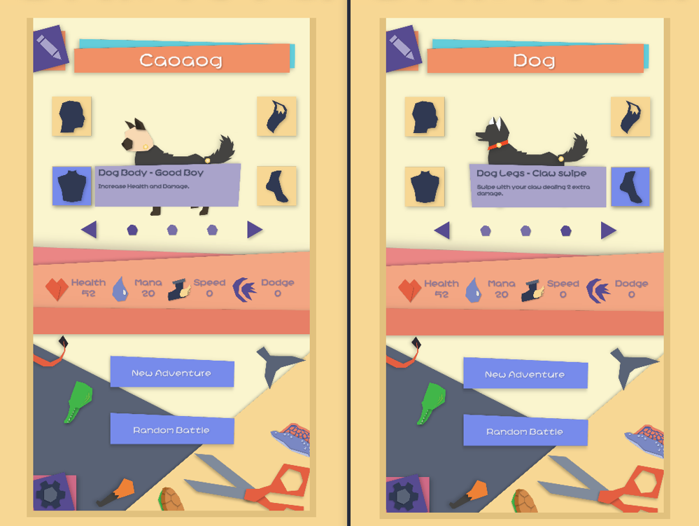

Crafted Chimera
Build, battle, win! Create your own Chimera from over 1 Million combinations
and test its power in battle! Test your luck in Adventure mode by battling Chimeras
from different Biomes! Defeat this opponent to be rewarded with one of its parts! See
how many you can collect to create some wacky Chimeras! Also, partake in our random
battle mode and go up against crazy Chimeras with any part!
Crafted Chimera was created for the IGDA Foundation Game Jam 2022. I worked alongside some of my closest friends (a couple of which are work colleagues from Filament Games) to make this game in a week. This jam was a competition and we ended up taking the first place prize of $5000.
Engine: Unity
Software Used: Visual Studio
Languages: C#
Timeframe: 48 hours
Status: Complete
Download here!
Crafted Chimera was created for the IGDA Foundation Game Jam 2022. I worked alongside some of my closest friends (a couple of which are work colleagues from Filament Games) to make this game in a week. This jam was a competition and we ended up taking the first place prize of $5000.
Engine: Unity
Software Used: Visual Studio
Languages: C#
Timeframe: 48 hours
Status: Complete
Download here!
My Contributions
Combat

The game loop of Crafted Chimera is similer to games such as Pokemon. Each Chimera that you craft has access to four abilities; each ability coming from a body part.
During a battle, you may use one of these four abilities to your advantage. The ultimate goal is to reduce the health of the enemy Chimera to zero. While many abilities are meant to damage the enemy Chimera, some have a more supportive role such as healing your Chimera, increasing your Chimera's speed, etc.
Continuing that last point, each Chimera has four statistics: Health, Mana, Speed, and Dodge. Health is the same as any other Health stat. Mana is the Chimera's resource that is used to play abilities. Each ability has a Mana cost. Speed controls which Chimera uses their ability first in the round; whoever has the higher speed goes first. Lastly, the dodge stat is subtracted to the hit chance of a damage ability. The higher the dodge stat, the lower the odds of the Chimera being damaged.
Lastly, since Mana is a very important resource, I felt it was necessary to give each Chimera 2 basic abilities no matter what. Each Chimera may Rest for a turn which increases their Mana, and each Chimera has a Basic Bash ability that deals a small amount of damage. This was important for gaining Mana during a battle, but also to ensure that each Chimera will have at least one damaging ability since it is possible to have a Chimera without one.
Various Pictures
